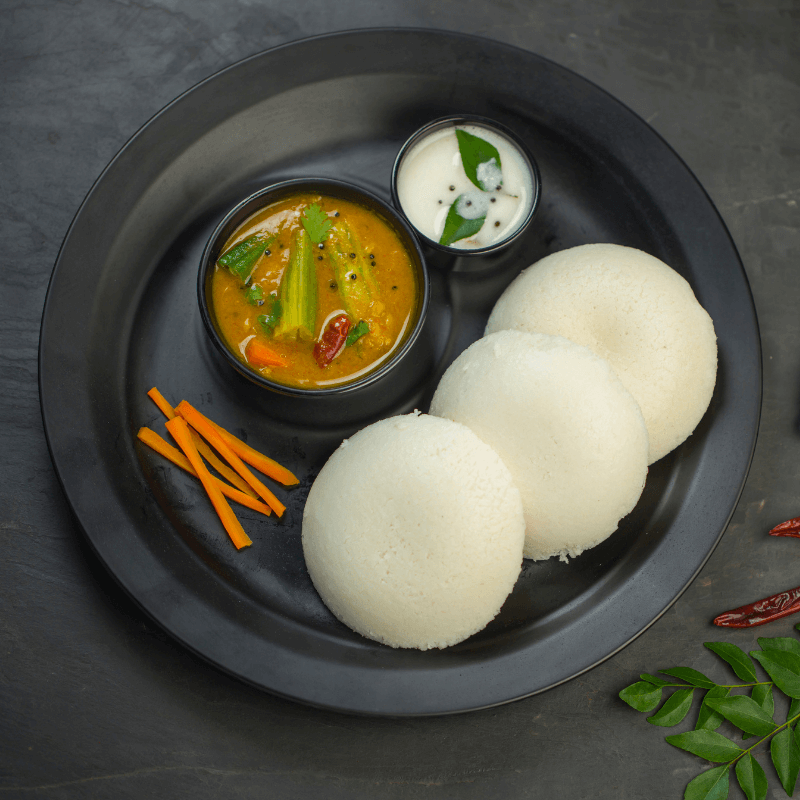

Ingredients
For the Rice:
2 cups Basmati rice,
Water for soaking,
4-5 cups water for cooking,
1-2 bay leaves,
4-5 whole cloves,
4-5 whole green cardamom pods,
Salt to taste,
For the Chicken Marinade:
500g (1 lb) chicken, cut into pieces,
1 cup yogurt,
1 tablespoon ginger-garlic paste,
1 teaspoon chili powder,
1/2 teaspoon turmeric powder,
Salt to taste,
For the Biryani:
3 tablespoons ghee or vegetable oil,
2 large onions, thinly sliced,
2 tomatoes, chopped,
1/2 cup chopped mint leaves,
1/2 cup chopped coriander leaves,
1 teaspoon biryani masala ,
1/2 teaspoon saffron strands soaked in warm milk .
Cooking instructions
Rinse the Basmati rice in cold water until the water runs clear.
Soak the rice in water for about 30 minutes.
In a large pot, bring 4-5 cups of water to a boil.
Add the soaked rice, bay leaves, cloves, green cardamom pods, and salt.
Cook the rice until it's 70-80% cooked (still slightly firm). Drain and set aside.
In a bowl, mix together yogurt, ginger-garlic paste, chili powder, turmeric powder, and salt to create the marinade.
Add the chicken pieces to the marinade, ensuring they are well-coated. Let it marinate for at least 30 minutes, or refrigerate for a few hours for better flavor.
In a large skillet or pot, heat ghee or oil over medium heat.
Add thinly sliced onions and sauté until golden brown. Remove half of the fried onions for garnishing.
Add the marinated chicken to the skillet and cook until the chicken is browned and cooked through.
Add chopped tomatoes, mint leaves, coriander leaves, and biryani masala (if using). Cook for an additional 5 minutes until the tomatoes are softened.
Assemble the Biryani:
Preheat the oven to 350°F (180°C).
In a deep baking dish, layer half of the partially cooked rice.
Spread the cooked chicken mixture over the rice layer.
Top with the remaining rice.
Drizzle saffron-soaked milk over the rice for color and aroma.
Sprinkle the reserved fried onions over the top.
Cover the baking dish tightly with aluminum foil or a lid.
Place the dish in the preheated oven and cook for about 20-30 minutes. Alternatively, you can cook on the stovetop on low heat for 20-30 minutes.
This slow cooking process, known as "dum," allows the flavors to meld and the rice to fully cook.
Gently fluff the biryani with a fork, ensuring that the rice and chicken are evenly distributed.
Serve the Chicken Biryani hot, garnished with fresh coriander leaves and accompanied by raita (yogurt with spices) or a side salad.

Ingredients
2 cups idli rice (parboiled rice),
1 cup urad dal (black gram lentils),
1/2 teaspoon fenugreek seeds,
Salt to taste.
Cooking instructions
Rinse the idli rice and urad dal separately under cold water.
Soak the idli rice and fenugreek seeds together in a bowl with enough water for about 4-6 hours.
Soak the urad dal in a separate bowl with enough water for about 4-6 hours.
After soaking, drain the water from the rice and fenugreek seeds. Grind them in a wet grinder or blender, adding a little water as needed, until you get a smooth batter.
Similarly, grind the urad dal with water until it becomes a smooth and fluffy batter.
Mix the rice batter and urad dal batter together in a large bowl. Add salt and mix well.
Cover the bowl and let the batter ferment in a warm place for about 8-12 hours or overnight. The batter should rise and become slightly fluffy.
Grease the idli molds or plates with a little oil or ghee.
Give the fermented batter a gentle stir.
Pour the batter into the idli molds, filling each mold about 3/4 full.
Steam the idlis in a steamer for about 10-15 minutes or until a toothpick inserted into the center comes out clean.
Allow the idlis to cool for a few minutes before removing them from the molds.
Serve the idlis hot with sambar, coconut chutney, or any other accompaniments of your choice.

Ingredients
For the Dough:
2 cups all-purpose flour
1/4 cup vegetable oil
1/2 teaspoon salt
Water for kneading
For the Filling:
2 cups boiled and mashed potatoes
1 cup boiled peas
1/2 cup finely chopped carrots
1/2 cup finely chopped green beans
1/2 cup finely chopped onions
1 tablespoon oil
1 teaspoon cumin seeds
1 teaspoon ginger-garlic paste
1 teaspoon garam masala
1 teaspoon coriander powder
1/2 teaspoon turmeric powder
1/2 teaspoon red chili powder (adjust to taste)
Salt to taste
Fresh coriander leaves, chopped
Juice of half a lemon
Other:
Oil for deep frying
Cooking instructions
In a bowl, mix the all-purpose flour, salt, and vegetable oil.
Gradually add water and knead to form a smooth, firm dough. Cover it with a damp cloth and set aside for 30 minutes.
Heat oil in a pan. Add cumin seeds and let them splutter.
Add chopped onions and sauté until golden brown.
Add ginger-garlic paste and sauté for another minute.
Add chopped carrots, beans, and peas. Cook until the vegetables are tender.
Add mashed potatoes, garam masala, coriander powder, turmeric powder, red chili powder, and salt. Mix well.
Cook the filling for a few minutes, stirring continuously.
Add fresh coriander leaves and lemon juice. Mix and let the filling cool.
Divide the dough into small balls.
Roll each ball into a thin oval or round shape.
Cut the rolled dough in half to form two semi-circles.
Create a cone shape by folding the semi-circle and sealing the edge with water.
Fill the cone with the prepared vegetable filling.
Seal the open edge to form a triangular shape.
Heat oil in a deep pan for frying.
Fry the samosas in batches until they turn golden brown and crispy.
Remove them from the oil and place them on paper towels to absorb excess oil.
Serve the samosas hot with mint chutney or tamarind sauce.